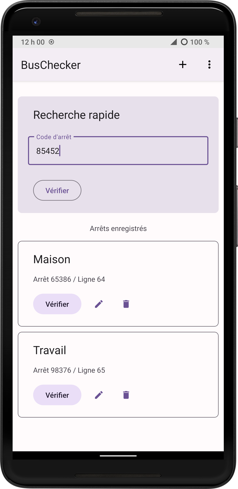

BusChecker utilise le service STM SMS, qui permet d'obtenir les horaires du bus sans Internet. Vous avez seulement besoin d'un forfait SMS!
Au lieu d'enter le code d'arrêt à chaque fois, BusChecker vous permet de sauvegarder vos arrêts de bus préférés et de connaître leur horaire en un clic.
Pas d'inquiétude. Avec la recherche rapide de BusChecker, vous avez juste à entrer le code d'arrêt et vous aurez les horaires.